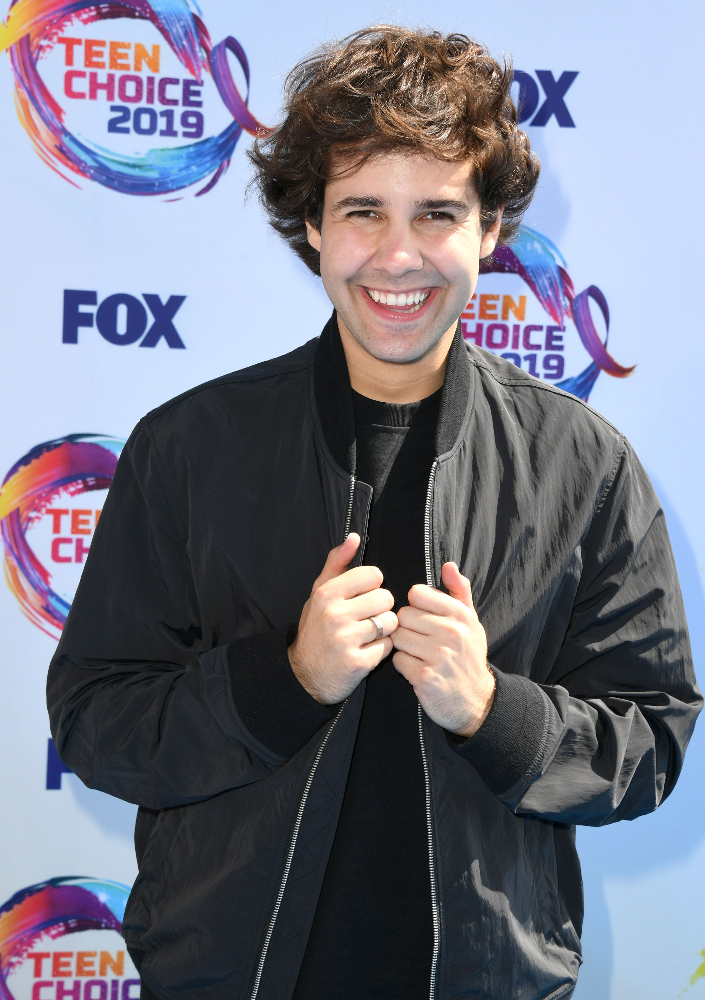

In mid-April 2019, Dobrik released a video explaining how his posting schedule would be cut down to two weekly vlogs from the usual three, opening time for him to pursue other opportunities. Dobrik hit the ground running, snagging a role as a judge on the brand-new Nickelodeon show "America's Most Musical Family." It was surreal for him -- judging a show next to musical stars Nick Lachey, Debbie Gibson, and Ciara Harris was definitely an achievement. On his podcast, Dobrik explained how out of the whole experience, what he found most bizarre was the freedom he had as to what he could have in his green room. The requests ranged from a fruit platter to lollipops and other sweets.
In addition, Dobrik co-hosted the 2019 Teen Choice Awards alongside Lucy Hale. This was definitely another great event, as Dobrik was able to meet one of his favorite celebrities, actor Robert Downey Jr. The highlight of the night was when sensation John Stamos personally presented Dobrik's own Teen Choice Award: Choice Male Web Star.

The digital sensation also had a minor role in the recently-released movie The Angry Birds Movie 2, playing the character "Axel." Overall, Dobrik is taking great strides for his career, all the while staying true to his roots with the Youtube vlogs.